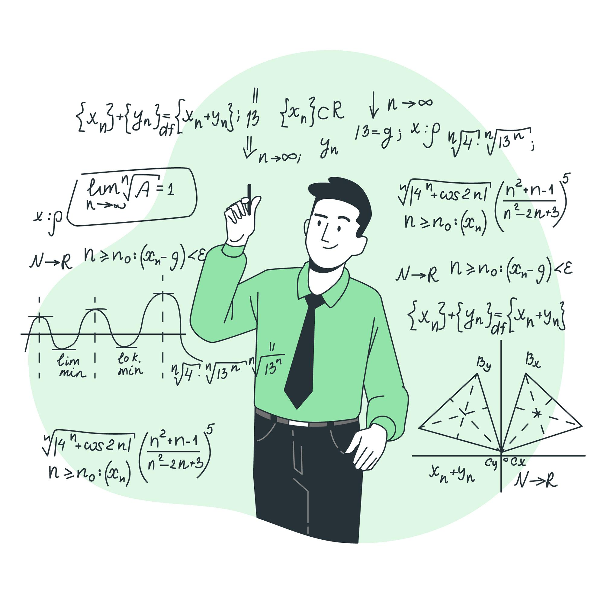
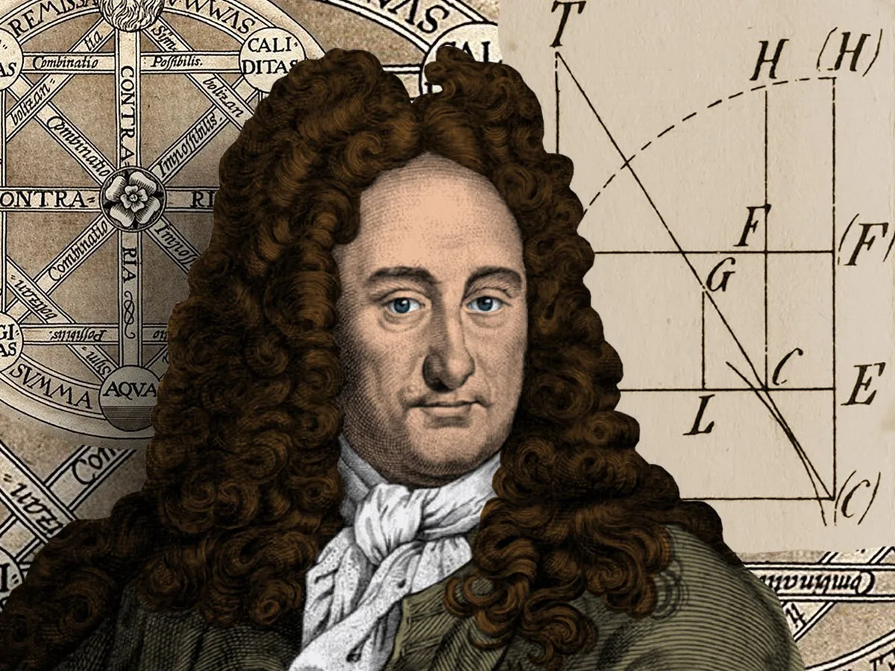
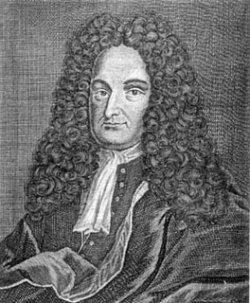
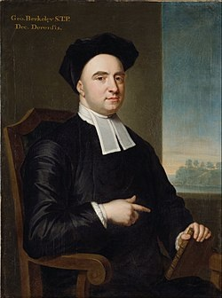

WebQuest Cálculo
Esta página foi desenvolvida como parte de uma atividade complementar da disciplina de Cálculo, sob a orientação do professor Luciano Condori. Ela busca reunir os conceitos mais relevantes da matéria para facilitar o aprendizado e apoiar estudantes que desejam superar os desafios dessa área tão importante para diversas profissões.
Obejtivos do WebQuest
Ajudar os alunos a compreenderem os conceitos de Cálculo de forma mais clara e prática
Reforçar os conteúdos aprendidos em sala de aula através de materiais complementares
Criar uma ferramenta acessível que apoie o estudo autônomo e colaborativo


Introdução á Calculo
O cálculo diferencial e integral é uma área central da matemática que estuda mudanças e
acumulações. O cálculo
diferencial foca nas taxas de variação de funções, com a derivada indicando como uma função muda
em relação às suas
variáveis.
Já o cálculo integral lida com o conceito de soma acumulada, como calcular áreas sob curvas ou
volumes de sólidos. Ambas
as áreas estão relacionadas pela Regra Fundamental do Cálculo, que afirma que a derivada e a
integral são operações
inversas.
Essas ferramentas são essenciais para entender e resolver problemas em diversas áreas, como
física, economia e
engenharia.
Historia de Calculo
A expressão "Cálculo" é uma forma simplificada adotada pelos matemáticos para se referirem à
ferramenta matemática usada
para analisar, de maneira qualitativa ou quantitativa, as variações que ocorrem em fenômenos com
componentes de natureza
física. Quando surgiu, no século XVII, o Cálculo tinha como objetivo resolver quatro tipos
principais de problemas
científicos e matemáticos daquela época:
Isaac Newton
Newton nasceu em Woolsthorpe, na Inglaterra. Em 1661, ingressou no Trinity College, em
Cambridge, com deficiências em
geometria. Foi graças à orientação do matemático Isaac Barrow que Newton se interessou pela
matemática e pelas ciências
em geral. Durante os anos de 1665 e 1666, Newton se refugiou em sua terra natal devido à peste
negra em Londres. Nesse
período, ele desenvolveu os fundamentos da ciência moderna: descobriu o Cálculo, reconheceu os
princípios que regem o
movimento dos corpos no sistema planetário, conjecturou a existência da força gravitacional e
determinou que a luz
branca é composta por todas as cores do espectro, do vermelho ao violeta.
Em 1667, Newton retornou a Cambridge, onde obteve o grau de mestre e tornou-se professor no
Trinity College. Dois anos
depois, assumiu a cadeira de Barrow, e seu espírito criativo foi desperto. Nesse período,
formulou a lei da gravidade,
explicou os movimentos da lua, dos planetas e das marés, e desenvolveu as leis da ótica,
termodinâmica e hidrodinâmica,
além de projetar o primeiro telescópio moderno.
Gottfried Wilhelm Leibniz
Leibniz nasceu em Leipzig, na Alemanha, e se destacou por sua maestria em diversas áreas do
conhecimento, como Direito,
Matemática, Filosofia, História e Literatura. Iniciou seus estudos superiores aos 15 anos, na
Universidade de Leipzig,
onde se formou em Direito. Aos 20 anos, doutorou-se em Direito pela Universidade de Altdorf.
Como diplomata, Leibniz teve a oportunidade de interagir com matemáticos e cientistas de vários
países, que o
incentivaram a continuar seu autodidatismo em Matemática, com destaque para o físico Christian
Huygens.
Talvez uma das realizações mais notáveis compartilhadas por Leibniz e Newton tenha sido a
invenção independente do
Cálculo, embora com motivações e metodologias distintas. Hoje, é amplamente reconhecido que
Leibniz desenvolveu o
Cálculo cerca de 10 anos após Newton, mas seus resultados foram tornados públicos 20 anos antes.
Atualmente, os conceitos centrais do Cálculo são essenciais nas tarefas interdisciplinares de
modelagem de fenômenos nas
ciências exatas, naturais, biomédicas, sociais aplicadas e em áreas voltadas à geração de
tecnologias.

O Cálculo Diferencial e Integral, apesar de suas inovações revolucionárias, não foi imune a
críticas durante o seu
desenvolvimento. Embora Isaac Newton e Gottfried Wilhelm Leibniz tenham sido amplamente
reconhecidos por suas
contribuições fundamentais, muitos matemáticos e filósofos da época questionaram a validade e a
fundamentação dos
métodos que estavam sendo propostos. A falta de rigor formal e a introdução de conceitos
abstratos, como os
infinitesimais, geraram controvérsias que, em muitos casos, foram expressas de forma veemente
por figuras proeminentes.
Entre os críticos mais notáveis estavam o matemático francês Michel Rolle e o filósofo e bispo
anglicano George
Berkeley, cujas objeções ao Cálculo ajudaram a destacar a necessidade de um maior aprofundamento
teórico e uma base mais
sólida para as novas ideias matemáticas. Embora suas críticas não tenham impedido o avanço do
Cálculo, elas
desempenharam um papel crucial na evolução da disciplina, direcionando os matemáticos a buscar
uma fundamentação mais
rigorosa e precisa para os métodos que haviam sido introduzidos.

Michel Rolle
Michel Rolle, matemático francês, foi um dos críticos mais contundentes dos métodos do Cálculo
Diferencial e Integral
que estavam sendo desenvolvidos por Isaac Newton e Gottfried Wilhelm Leibniz. Apesar de
reconhecer a utilidade das
ferramentas matemáticas criadas por esses cientistas, Rolle se opôs às novas abordagens do
Cálculo, principalmente
devido à falta de rigor formal que ele percebia nas suas fundamentações.
Ele acreditava que o Cálculo deveria ser mais bem estruturado e explicado em termos lógicos,
algo que, para ele, estava
ausente nas primeiras formulações de Newton e Leibniz. Apesar disso, suas críticas não impediram
o avanço do Cálculo,
mas serviram como um convite para que matemáticos posteriores buscassem uma base mais sólida e
rigorosa para essas novas
ideias.
George Berkeley
George Berkeley, filósofo e bispo anglicano, também foi um crítico importante do Cálculo
Diferencial e Integral,
especialmente da teoria do "infinitesimal" que estava sendo usada por Newton e Leibniz.
Berkeley
questionava a validade
do conceito de "quantidades infinitesimais", que eram usadas no Cálculo para representar valores
extremamente pequenos,
mas que não tinham uma base matemática rigorosa na época.
Em sua obra The Analyst (1734), ele
fez uma crítica feroz ao
Cálculo, acusando os matemáticos de estarem usando uma "aritmética dos fantasma" ao lidar com os
infinitesimais, que ele
via como um conceito metafísico e sem fundamento lógico. Embora suas críticas tenham gerado
controvérsia, elas
destacaram a necessidade de maior rigor no desenvolvimento do Cálculo, o que mais tarde levou à
formalização do conceito
de limite e à construção de uma base sólida para o Cálculo.
